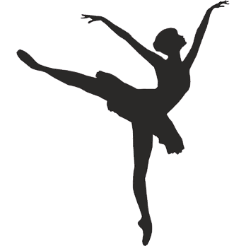
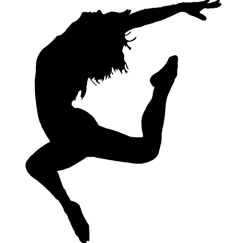
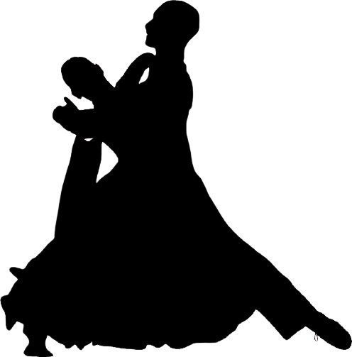
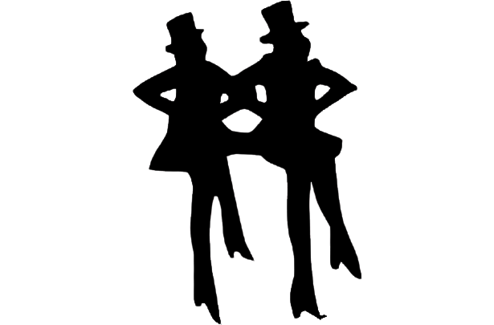

| Aqui na NextStep você vai se tornar um bailarino, aprender técnica sobre as modalidades, se formar como profissional e participar de aulas regulares.
| Nossa escola permite que os alunos tenham consciência corporal e saiba como o seu corpo se relaciona com o espaço. Assim, ele pode desenvolve coordenação motora, equilíbrio e flexibilidade. Além disso temos uma variedade de cursos.
______________________________________________________________________________________________
-Balé Clássico

No Ballet a técnica é altamente acadêmica e muito metódica. É uma modalidade de dança que requer muita habilidade, técnica e treinamento pois possui um vocabulário próprio e metódico.
-Dança contemporânea

A dança contemporânea propõe intensas inovações e experimentações coreográficas. Ela abandona totalmente a técnica dos
movimentos, em uma única apresentação podemos ter uma mistura de ritmos.
-Valsa

A valsa tem um ritmo lento e pelo movimento de torções em par, que se movem pelo salão em círculos, como se estivessem dando voltas.
-Sapateado

No sapateado os ruídos que os dançarinos produzem com os sapatos em contato com o chão, fazendo dos pés dos dançarinos verdadeiros instrumentos de percussão, os dançarinos produzem sons sincopados, ritmados com os sapatos.
______________________________________________________________________________________________
~Por que dançar?~
- Desenvolve a coordenação motora, agilidade e ritmo.
- Melhora a percepção espacial e fortalece a musculatura.
- Também melhora a autoestima e as relações interpessoais.
- Reduz os bloqueios psicológicos, melhora a concentração.
- Ajuda na sensibilidade e a motivação.